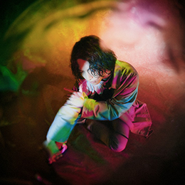

<div id="modal" class="comment">
  <div class="modal-page">
    <ul>
      <li>
        <p class="airtist">
          
          <span>はるまきごはん</span>
        </p>
        <div class="text">
          札幌市出身のボカロP、イラストレーター、アニメーター。<br>
          自身の楽曲のアニメーションMVやアートワークなど全ての制作を手掛ける。<br>
          最新作“幻影”シリーズでは、2022年5月27日リリースのフルアルバム「幻影EP」のほか、スマホアプリゲーム「幻影AP」ライブ「幻影LV」を予定。スープカレーが好き。
        </div>
      </li>
      <li>
        <p class="airtist">
          
          <span>キタニタツヤ</span>
        </p>
        <div class="text">
          2014年頃からネット上に楽曲を公開し始め、ボカロP”こんにちは谷田さん”として活動をスタート。<br>
          2017年、高い楽曲センスが買われ作家として楽曲提供をしながらソロ活動も行う。<br>
          2018年9月にソロAL「I DO(NOT)LOVE YOU.」を発表。同作はギター、ベース、プログラミングなど、マスタリング以外のすべての作業を一人で完結させた作品で、高い評価を得る。<br>

          ノイタミナ枠アニメ「平穏世代の韋駄天達」、漫画「BLEACH」20周年&原画展「BLEACH EX.」テーマソング、フジテレビドラマ「ゴシップ」主題歌などシンガーソングライターとして多岐にわたる楽曲の書き下ろしを始め、星街すいせい、ジャニーズWEST、私立恵比寿中学への楽曲提供、ベーシストとしては『ヨルシカ』のサポートメンバーとして活動に参加し、AdoやTK from 凛として時雨の楽曲に参加、バンド『sajou no hana』のメンバーとしてタイアップ曲を手掛けるなど、活動は多岐にわたる。
        </div>
      </li>
    </ul>
  </div>
</div>